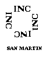
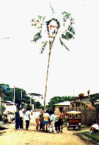

|
 |
|
|
Cortesía de Adrián Mendoza Ocampo
Fotos: L M - Fotos, Moyobamba
|
Celebración institucionalizada desde hace muchos años y que
se celebra del 23 al 30 de Junio de todos los años,
donde se desarrollan actividades culturales, sociales, costrumbristas como
elección de Reinas de Belleza, fiestas sociales y costrumbristas,
arreglo de la ciudad con ornamentas, tours a lugares turísticos,
velaciones, concursos festivales, corsos y otras actividades interesantes
que hacen que los turístas y lugareños gocen a plenitud de una
celebración
selvática con los detalles de la región, con alegría y
amistad que los Moyobambinos saben brindar.
En la mayoría de estos días se estila comer los típicos
Juanes
en todas sus variadades y saborear la diversidad de bebidas regionales.
A partir del año 2001 la Semana Turística fue trasladada para el periodo entre el 23 al 29 de Julio. |
 Humisha |
Al igual que la de San Juan, la fiesta de Patrón de Santiago está llena de folklore y tradición, donde están presente las comidas típicas como los juanes, las bebidas como la chicha de harina de trigo, las pandillas y el corte de humishas, así también como la quema de fuegos artificiales, velaciones y procesión.